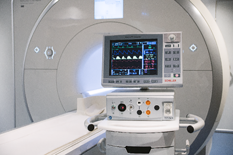

MAGLIFE SERENITY
Monitor de signos vitales para resonancia magnética

DESCRIPCIÓN:
Monitor de signos vitales para uso durante el estudio de resonancia magnética en pacientes adultos, pediátricos y neonatos. Probado y aprobado para campos magnéticos de 0.2 hasta 3.0 Teslas, compatible con todas las marcas y tipos de RM. Puede ser controlado de forma segura desde fuera de la jaula de Faraday.
CARACTERÍSTICAS:
El monitor de signos vitales MAGLIFE SERENITY marca SCHILLER es capaz de monitorizar todos los signos vitales del paciente durante el escaneo de imágenes por resonancia magnética, ya que ha sido desarrollado para satisfacer los requisitos más elevados de cardiología, hemodinamia, incluso bajo anestesia lo que lo convierte en el monitor ideal para adultos, niños y neonatos.
Su diseño reduce al mínimo la interferencia de la señal al adquirir el ECG por la protección elevada ante los gradientes más fuertes. Realiza la transmisión de datos mediante cable de fibra óptica, ethernet o WLAN. Dispone de un analizador de campos de dispersión para analizar constantemente el campo magnético, indicando cuando se alcanza el umbral y activando un apagado de seguridad cuando se supera este umbral.
Con el monitor de resonancia magnética, el personal de imagenología podrá obtener imágenes de gran calidad apoyándose del ECG, cuyo cable ha sido especialmente fabricado para evitar interferencias en la adquisición de la señal y eliminar el riesgo por quemaduras.
ESPECIFICACIONES TÉCNICAS:
Tecnología: Adquisición de 3 canales de ECG, saturación de oxígeno, capnografía, presión no invasiva/invasiva y temperatura.
Los monitores MAGLIFE SERENITY obtienen la calidad más alta de ECG durante la resonancia magnética, con una tecnología compatible con RM que reduce el riesgo de quemaduras así como interferencia de señal.
SCHILLER ofrece el sensor de saturación con cable de fibra óptica para usar de manera segura dentro del resonador o el sensor inalámbrico para una mejor movilidad y comodidad del paciente.
La capnografía se realiza con el sistema SideStream que sensa datos inspiratorios y exhalatorios de CO2/NO2/O2 y/o hasta 5 agentes anestésicos.
Excelente rendimiento: Capaz de realizar tendencias de hasta 24 horas en todos los parámetros. Incluye batería no magnética de hasta 6 horas de duración y una impresora de papel térmico para registro de 2 canales.
Conectividad: Última tecnología WLAN y ethernet para comunicación con HIS y PACS.
Seguridad: Alarmas audibles y visuales en todos los parámetros. Detector de campo magnético 3D que muestra la medición del campo magnético, cuando se sobrepasan los límites del campo magnético un sistema de autoprotección suspende el equipo.
Batería: De plomo sellada (12 V, 17 Ah), con 6 horas de funcionamiento y tiempo de recarga de 10 horas con monitor conectado a CA.
• Disponibilidad en varias modalidades: venta, renta, comodato.
• Contamos con servicio de capacitación, mantenimiento preventivo, mantenimiento correctivo, actualización y control de calidad externo.
• Disponibilidad de electrodos de ECG, brazaletes de presión sanguínea, cables de extensión, adaptadores en T, circuitos de capnografía, sensores de SpO2, transductores de presión no invasiva.
Registro: 0200R2014 SSA
DATOS COMPLEMENTARIOS: Para mayor información, asesoría técnica y pedidos comuníquese con nosotros:
GRUPO Eólica, S.A. DE C.V.
|
Teléfono: (55) 5584-4699 |
|